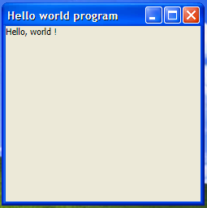

This documentation will learn you to make a JS program for this Web Browser Windows XP !
a. Create the Window element
Before creating a Window, we'll learn about the WindowAPI. What is the WindowAPI ? It's the API used to make Windows, Context Menus, add elements in start menu, ect... To create a Window, use
b. Add elements to the Window's content
After creating the Window, there is a few more values in it. The
3. The window doesn't get focus by default, what do i do ?
Actually, the window doesn't directly get focused after it's creation. It can be useful to make Gadgets, or custom notifications. To focus the Window, use
4. An example code
Here's an example "Hello, world !" code.
var window = WindowAPI.CreateWindow("Hello world program");
window.content.innerText = "Hello, world !";
window.focus();
Here's the result :
Exceptions are handled by messageboxes. However, if you want to create your own, it's easy. All you'll need to do is use
Here's the values that ErrorType accepts.
0 :
1 :
2 :
Like .net, the error sound depends on the ErrorType too.